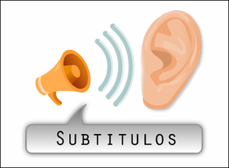

 |
|
El diseño y la funcionalidad del simulador contempla los problemas que puedan surgir a personas que padezcan deficiencias auditivas.
El simulador plantea que cada secuencia animada o de vídeo que aparezca en pantalla, será subtitulada, incluso se mostrarán en otro color, los textos pertenecientes a efectos sonoros con especial importancia en el contexto de la escena. En segundo lugar, cuando un personaje locuta un mensaje, siempre será visible en la barra de subtítulos. Finalmente, cuando un elemento emita una descripción sonora al interactuar con él se acompañará también de una etiqueta escrita. |